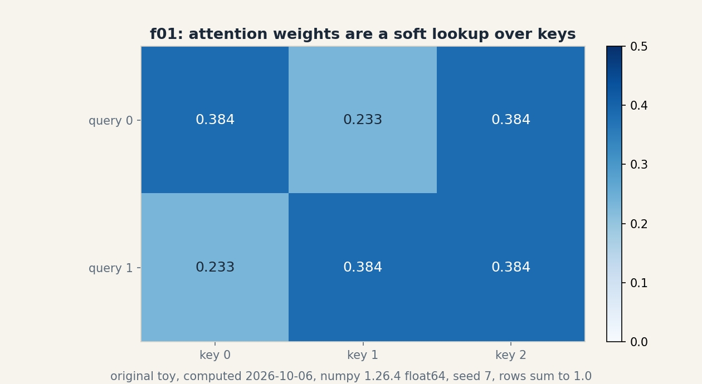
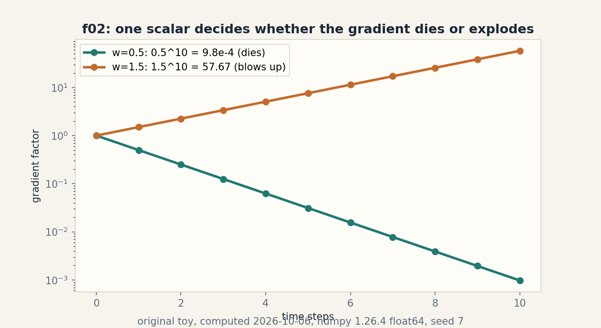
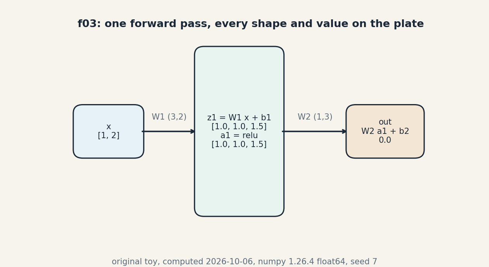
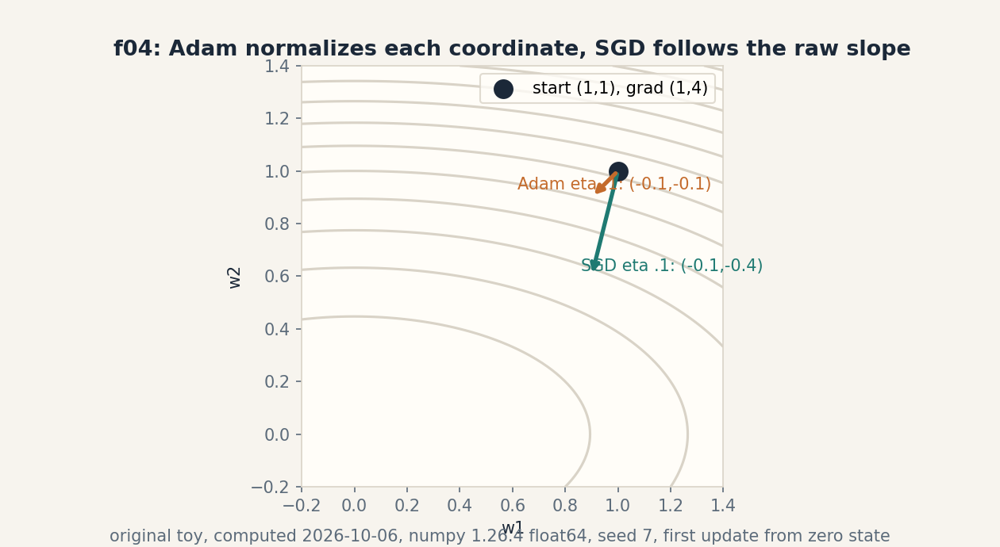

U08 · Neural and sequence architectures
Lesson 08, Neural and sequence architectures
Date: 2026-10-06. Unit: math-ml-U08. Leaf concepts C01-C12. Prerequisites: P11, P12, P13, P14. Local remediation R58-R69 in prerequisites.md. Source attribution PENDING on all rows (G2 open: no transcript inspected).
Source mapping
Title map: Lec 41 Neural Networks and Universal Approximation, Lec 42 ERM on Neural Networks and Error Backpropagation, Lec 43 Local Receptive Field and Parameter Sharing, Lec 44 CNNs as Regularized MLP, Lec 45 RNNs, Lec 46 Backprop in RNNs and Vanishing Gradients, Lec 47 LSTMs and GRUs, Lec 48-49 Attention, Lec 50 Multi-Head Attention and Transformers, Lec 51 Positional Embeddings, Lec 52 Transfer Learning and Distillation, Lec 53 SGD RMSProp ADAM Optimizers, Tutorials 11-15 PyTorch and CNN/RNN labs (titles only, SRC-04). No spoken content inspected. Original toys with computed numbers. Figure ids f01-f04 in assets/u08/ and visual_audit.md.
Scope and objectives
After this lesson the learner can: run a forward pass by hand with shapes. derive backprop for a scalar net and check it against finite differences. compute a convolution. count parameters for dense versus shared weights. apply the CNN shape formula. unroll an RNN. explain gradient decay and explosion as a product. run one LSTM step. compute attention weights and outputs. trace shapes through a transformer block. contrast layer and batch normalization. and execute one Adam update next to one SGD step.
How to read this lesson
Shell numbers (0-10) mark the Russian-doll ladder position. Numbers marked “computed 2026-10-06” came from compute_completion.py (numpy 1.26.4, float64, seed 7). All code is numpy only. no framework is installed on this box.
C01, MLP
Shell 0: the question is what the network outputs for one input. The toy: x = [1, 2], shape (2,). W1 shape (3, 2), b1 shape (3,), W2 shape (1, 3), b2 scalar.
W1 = [[1, 0], [0, 1], [-1, 1]] b1 = [0, -1, 0.5]
W2 = [[1, -2, 0.5]] b2 = 0.25
Shell 1, mental model: a layer is an affine map plus a bend. Stack two and the bends compose into curves the single layer cannot draw.
Shell 2, objects: z1 = W1 x + b1 shape (3,), a1 = relu(z1), out = W2 a1 + b2 scalar. Assumption: relu acts per item.
Shell 3, computed numbers. z1 = [1, 1, 1.5]. a1 = [1, 1, 1.5]. out = 1(1) - 2(1) + 0.5(1.5) + 0.25 = 0.0. Computed 2026-10-06. The exact zero is luck of the toy, not a law.
Shell 4, code:
z1 = W1 @ x + b1
a1 = np.maximum(z1, 0)
out = W2 @ a1 + b2
Shell 5, check: shapes compose: (3,2)(2,) -> (3,). (1,3)(3,) -> (1,). The three z1 items each equal a row dot x plus bias: row 3 gives -1(1) + 1(2) + 0.5 = 1.5.
Shell 6, costs: forward pass costs O(sum of weight item counts). Memory holds the activations for the backward pass of C02.
Shell 8, alternative: no hidden layer (linear model). It cannot bend. the C01 toy with its exact zero is still a flat map. Selection boundary: linear when the relation is linear. hidden layers when it bends.
Shell 7, failure case: stack two linear layers with no relu: (W2 W1) x + (W2 b1 + b2) is one linear layer. Depth without nonlinearity is decoration. The bend is the whole point.
Shell 9, research: width versus depth at fixed parameter count. Question: on a fixed toy regression task, does a wide shallow net beat a narrow deep one? Baseline: the C01 shapes scaled up, matched parameter budgets.
Figure f03 draws the three boxes with every shape and value on the plate. Shell 5 reuses the shape tuple in C10.
C02, backprop
Shell 0: the question is how each weight should move to cut the loss. The toy is a scalar net: o = w2 relu(w1 x + b1) + b2, loss L = 0.5 (o - y)^2, with w1 = 0.5, b1 = -0.2, w2 = 1.5, b2 = 0.1, x = 2.0, y = 3.0.
Shell 1, mental model: the chain rule walks the error backward. Each link multiplies by its local slope. Reverse-mode differentiation computes all weight gradients in one backward walk.
Shell 2, objects: z = w1 x + b1 = 0.8, a = relu(z) = 0.8, o = 1.3, L = 1.445. do = o - y = -1.7.
Shell 3, derivation: dw2 = do a = -1.36. db2 = do = -1.7. da = do w2 = -2.55. dz = da (z > 0) = -2.55. dw1 = dz x = -5.1. db1 = dz = -2.55. Computed 2026-10-06.
Shell 4, code: one forward pass storing z, then the backward walk above. Six lines.
Shell 5, check: central finite differences with h = 1e-7 give dw1 = -5.1000000012 and dw2 = -1.3600000015, matching the analytic values to 8 digits. The check is the contract: never trust a backward pass without it.
Shell 6, costs: one forward plus one backward pass, about twice the forward cost, for all parameters at once. Memory holds every activation.
Shell 8, alternative: forward-mode differentiation pushes one input direction forward. it costs O(n) passes for n parameters. Selection boundary: reverse mode when parameters outnumber outputs (always in deep learning).
Shell 7, failure case: the silent wrong gradient. A sign error in dz passes every shape check and only the finite-difference check catches it. See interview T1 for the kink variant.
Shell 9, research: gradient noise scale across batch sizes. Question: does the C09 batch experiment of U10 predict the largest useful batch for this toy? Falsifiable by measuring loss curves at B = 4, 16, 64.
Figure: the C02 plate is a table (weight, analytic, finite-difference, digits that agree). Numbers are the claim.
C03, convolution
Shell 0: the question is what a filter sees. The toy: signal s = [1, 2, 3, 4], kernel k = [1, 0, -1], valid mode (no padding).
Shell 1, mental model: slide the kernel along the signal. at each stop, take the dot product. The output marks where the signal changes the way the kernel likes.
Shell 2, objects: output length n - k + 1 = 2. Position 0: 1(1) + 2(0) + 3(-1) = -2. Position 1: 2(1) + 3(0) + 4(-1) = -2. Output [-2, -2]. The kernel [1, 0, -1] is a difference detector. the constant slope gives a constant response.
Shell 3, note on convention: deep learning uses cross-correlation (no kernel flip). With learned kernels the flip is irrelevant. with hand kernels the sign convention matters and must be stated.
Shell 4, code: np.convolve(s, k[::-1], mode=”valid”) or the explicit loop. Both give [-2, -2]. Computed 2026-10-06.
Shell 5, check: output length 4 - 3 + 1 = 2. A constant signal [c, c, c, c] gives [0, 0]: the difference detector ignores level, sees change.
Shell 6, costs: O(n k) per channel. Small kernels keep it cheap. that is the whole economy of CNNs.
Shell 8, alternative: a dense layer on the 4 inputs with 2 outputs (8 weights + 2 biases vs 3 kernel weights). Dense sees everything everywhere. conv sees local patterns anywhere. Selection boundary: locality in the signal.
Shell 7, failure case: kernel longer than the signal in valid mode: empty output, silent shape 0. Pad or shrink the kernel. never let the shape go negative.
Shell 9, research: learned versus hand kernels on a tiny edge task. Question: does training from random init recover [1, 0, -1] up to scale and sign? Falsifiable by inspecting the learned kernel.
Figure: the C03 plate is an ASCII slide diagram with the two dot products. The kernel symbol k is reused in C05.
C04, locality and weight sharing
Shell 0: the question is what sharing buys. The toy: 32x32 image, 100 hidden units.
Shell 1, mental model: a dense layer gives every input pixel its own weight per hidden unit. A conv layer uses one small kernel everywhere. Same image, two parameter bills.
Shell 2, objects: dense count = 32(32)(100) + 100 = 102,500. Conv count for eight 5x5 filters = 5(5)(8) + 8 = 208. Ratio about 493 to 1. Computed 2026-10-06.
Shell 3, derivation: sharing ties the weights across positions, so the count is per filter, not per position. The assumption is translation invariance: an edge is an edge wherever it sits.
Shell 4, code: count parameters by summing p.size over layers. assert dense == 102500 and conv == 208.
Shell 5, check: the +100 and +8 are the biases, one per output. Forgetting them is the classic off-by- few error.
Shell 6, costs: fewer parameters means less memory, faster steps, and a stronger inductive bias. The price is expressivity at fixed positions.
Shell 8, alternative: locally connected layers keep locality but drop sharing (one kernel per position). More parameters than conv, fewer than dense. Selection boundary: conv by default. local when the task rule is position-dependent.
Shell 7, failure case: the task “is the dot in the top-left corner” depends on absolute position. Sharing forces the net to relearn the detector at every location from data. The bias is wrong for the task. a dense or local layer fits it directly.
Shell 9, research: sharing across scale as well as position. Question: do multi-scale kernels beat a single 5x5 on a tiny scale-varying toy at matched parameter count? Falsifiable by construction.
Figure: the C04 plate is a table (layer, count). Two rows. the ratio is the claim.
C05, CNN shape
Shell 0: the question is how big the feature map is. The toy: 28x28 input, 5x5 kernel, stride 1, no padding. then 2x2 max-pool, stride 2.
Shell 1, mental model: the kernel must fit inside the image. Each placement is one output pixel. Pooling then takes the max of each 2x2 block.
Shell 2, formula: out = floor((W - K + 2P)/S) + 1.
Shell 3, computed numbers. Conv: (28 - 5)/1 + 1 = 24. Pool: (24 - 2)/2 + 1 = 12. Feature map 24x24, then 12x12. Computed 2026-10-06.
Shell 4, code: assert (28 - 5)//1 + 1 == 24 and (24 - 2)//2 + 1 == 12.
Shell 5, check: the formula must give an integer. If (W - K + 2P) is not divisible by S, frameworks floor it and silently drop the last column. The check is the divisibility test before the run.
Shell 6, costs: the 24x24x8 activation map dwarfs the 208 parameters in memory. Activations, not weights, dominate CNN memory.
Shell 8, alternative: stride-2 convolution instead of pooling. Learned downsampling versus fixed max. Selection boundary: pooling for a cheap baseline, strided conv when the downsampling should be learned.
Shell 7, failure case: the silent drop. A 27-wide input with K = 5, S = 2 gives (27-5)/2 + 1 = 12 with one column discarded. The model trains fine and the user never notices the lost edge pixels. Assert the shape. do not assume it.
Shell 9, research: the memory-accuracy trade of early downsampling. Question: does stride-2 in the first layer hurt a tiny object-detection toy more than late pooling? Falsifiable with matched FLOPs.
Figure: the C05 plate is an equation block with the two applications of the formula. The shape tuple is reused in C10.
C06, recurrence
Shell 0: the question is how a net reads a sequence. The toy: h_t = tanh(W_h h_{t-1} + W_x x_t), with W_h = [[0.8,-0.2],[0.1,0.5]], W_x = [[1.0],[0.5]], h_{-1} = [0, 0], inputs x_0 = 1.0, x_1 = -0.5.
Shell 1, mental model: the hidden state is a running note. Each step mixes the old note with the new input through the same weights. Same weights at every step: sharing across time.
Shell 2, objects: h_t shape (2,). W_h (2,2), W_x (2,1). Assumption: tanh keeps the state bounded in (-1, 1).
Shell 3, computed numbers. t = 0: pre = [1.0, 0.5], h_0 = [0.7616, 0.4621]. t = 1: pre = W_h h_0 + W_x (-0.5) = [0.0169, 0.0572] after tanh: h_1 = [0.0169, 0.0572]. Computed 2026-10-06.
Shell 4, code: the two-line loop above, unrolled for the toy.
Shell 5, check: h_0 recomputed by hand: tanh(1.0) = 0.7616, tanh(0.5) = 0.4621. The second step nearly erased the first input’s trace: 0.7616 -> 0.0169. That erasure is the memory problem of C07/C08.
Shell 6, costs: O(T) time, O(1) extra memory per step if only the last state is kept. O(T) to keep all states for backprop through time.
Shell 8, alternative: 1D convolution over time sees a fixed window with no state. Cheaper and parallel. cannot carry information past its window. Selection boundary: recurrence for unbounded context, conv for fixed windows.
Shell 7, failure case: the vanishing trace above. With W_h near zero the state forgets in one step. with W_h large it saturates tanh and the gradient dies anyway. Plain recurrence is fragile. C08 gates it.
Shell 9, research: the erasure rate as a function of the spectral radius of W_h. Question: does the measured half-life of an input’s trace match the radius prediction on random W_h? Falsifiable by simulation.
Figure: the C06 plate is a table (t, pre, h_t). Two rows. the erasure is visible.
C07, gradient decay and explosion
Shell 0: the question is what happens to the gradient across ten time steps. The toy is the scalar case: dh_t/dh_{t-1} = w, so the ten-step factor is w^10.
Shell 1, mental model: backprop through time multiplies the same local slope ten times. Below 1 the product dies. above 1 it explodes. The boundary is exactly 1.
Shell 2, objects: w = 0.5 gives 0.5^10 = 9.7656e-4. w = 1.5 gives 1.5^10 = 57.665. Computed 2026-10-06. In the matrix case the spectral radius plays the role of |w|.
Shell 3, derivation: dh_10/dh_0 = prod_{t=1..10} dh_t/dh_{t-1} = w^10. Each tanh’ <= 1 can only shrink it further.
Shell 4, code: np.power(0.5, np.arange(11)) and the 1.5 version. assert the endpoints.
Shell 5, check: log scale: log10(9.7656e-4) = -3.01, ten multiplications by 0.5. The check is the exponent: 10 log10(w).
Shell 6, costs: none at the toy level. In real nets the cost is failed training runs.
Shell 8, alternatives: gradient clipping caps the norm (treats the symptom). gating (C08) fixes the multiplication itself. careful init sets the radius near 1. Selection boundary: clip as a safety net always. gates when long memory is the goal.
Shell 7, failure case: clipping hides the explosion but keeps the direction wrong. A clipped gradient of norm 1.0 from a true norm of 1e6 still points somewhere the loss surface never asked for. Clip and investigate. never clip and ignore.
Shell 9, research: the radius schedule. Question: does starting with radius slightly above 1 and annealing beat a fixed radius-1 init on a long-memory toy? Falsifiable with matched seeds.
Figure f02 plots both powers on a log scale. The two curves are the claim.
C08, gates
Shell 0: the question is how a net keeps a memory for ten steps. The toy is one LSTM step: x = 0.7, h = [0.2], c = [0.3], weights Wf = 0.5, Wi = -0.4, Wg = 0.9, Wo = 0.6, biases bf = 0.1, bi = -0.1, bg = 0.0, bo = 0.2.
Shell 1, mental model: three gates guard the cell. The forget gate decides what to erase, the input gate what to write, the output gate what to show. All are sigmoids in (0, 1): soft switches.
Shell 2, objects: f = sigmoid(0.5(0.7) + 0.1) = 0.6106. i = sigmoid(-0.4(0.7) - 0.1) = 0.4061. g = tanh(0.9(0.7)) = 0.5581. o = sigmoid(0.6(0.7) + 0.2) = 0.6502. c_new = f c + i g = 0.6106(0.3) + 0.4061(0.5581) = 0.4098. h_new = o tanh(c_new) = 0.6502(0.3885) = 0.2525. Computed 2026-10-06.
Shell 3, derivation: the cell update is additive: c_new = f c + i g. When f = 1 and i = 0, the cell copies itself exactly and the gradient flows unchanged: that is the constant error carousel.
Shell 4, code: the six lines above, in order f, i, g, o, c, h.
Shell 5, check: c_new recomputed term by term: 0.1832 + 0.2266 = 0.4098. h_new in (-1, 1). Each gate in (0, 1).
Shell 6, costs: four times the parameters of a plain RNN step. The price of memory.
Shell 8, alternative: GRU merges the cell and hidden state with two gates instead of three. Fewer parameters, similar behavior. Selection boundary: LSTM by default, GRU for a cheaper sweep.
Shell 7, failure case: forget bias at 0 gives f = 0.5 at init, so the cell halves its memory each step before training starts. The standard fix sets the forget bias to 1.0, so f starts near 0.73 and the net begins life remembering.
Shell 9, research: gate saturation in trained nets. Question: do the forget gates of a trained toy LSTM sit at 0/1 extremes or in the middle? Falsifiable by histogramming gate activations on the C06 data.
Figure: the C08 plate is a table (gate, formula, value). Six rows. the additive cell update is the claim.
C09, attention
Shell 0: the question is how a query picks its sources. The toy: two queries, three keys, d = 4. Q rows [1,0,0,0] and [0,1,0,0]. K rows [1,0,0,0], [0,1,0,0], [1,1,0,0]. V rows [1,2], [3,4], [5,6].
Shell 1, mental model: attention is a soft lookup. Score each key against the query, softmax the scores into weights, return the weighted sum of values. Differentiable dictionary lookup.
Shell 2, objects: scores S = Q K^T / sqrt(d). sqrt(4) = 2. S row 0 = [0.5, 0, 0.5]. row 1 = [0, 0.5, 0.5]. Weights: softmax of [0.5, 0, 0.5] = [0.3837, 0.2327, 0.3837]. of [0, 0.5, 0.5] = [0.2327, 0.3837, 0.3837]. Outputs: row 0 = [3.0, 4.0]. row 1 = [3.3019, 4.3019]. Computed 2026-10-06.
Shell 3, derivation: softmax with max subtraction is exact: subtract the row max before exp. Row 0: exp([0, -0.5, 0]) = [1, 0.6065, 1], sum 2.6065, weights as above.
Shell 4, code:
S = Q @ K.T / np.sqrt(d)
S = S - S.max(axis=1, keepdims=True)
A = np.exp(S)
A /= A.sum(axis=1, keepdims=True)
out = A @ V
Shell 5, check: each weight row sums to 1.0. Output row 0 equals V row mix: 0.3837[1,2] + 0.2327[3,4] + 0.3837[5,6] = [3.0003, 4.0004].
Shell 6, costs: O(n^2 d) time and O(n^2) memory for n queries and keys. The quadratic term is the transformer tax.
Shell 8, alternative: linear attention rewrites the softmax as a kernel feature map for O(n d^2). Approximate, cheaper at long n. Selection boundary: exact attention below ~4k tokens, linear above.
Shell 7, failure case: drop the 1/sqrt(d) scale. Dot products grow with d. at d = 512 a typical score is tens of units and the softmax saturates to a one-hot. Gradients through a saturated softmax are ~0 and the keys stop learning. The scale is load-bearing.
Shell 9, research: the temperature of attention. Question: does a learned per-head scale beat the fixed 1/sqrt(d) on the C09 toy scaled to d = 64? Falsifiable with matched training budgets.
Figure f01 shows the weight heatmap. Shell 5 reuses the weight matrix in C10.
C10, transformer
Shell 0: the question is what shape flows where in one block. The toy: sequence length n = 5, model dim d = 8, heads H = 2, per-head dim 4, feedforward 8 -> 16 -> 8.
Shell 1, mental model: a block is attention plus a per-position feedforward net, each wrapped in a residual skip and a normalization. The shapes must line up at every addition.
Shell 2, shape trace. Input X: (5, 8). Per head: Q, K, V: (5, 4). Scores: (5, 5). Head output: (5, 4). Concat heads: (5, 8). Output projection: (5, 8). Residual add: (5, 8) + (5, 8). Norm: (5, 8). FFN: (5, 8) -> (5, 16) -> (5, 8). Residual add again: (5, 8).
Shell 3, derivation: per-head dim = d / H = 4 must divide evenly. The residual X + sublayer(X) needs identical shapes. that constraint designs the whole block.
Shell 4, code: assert every intermediate shape in the trace above with a comment per line.
Shell 5, check: 8/2 = 4 exact. Scores (5,5): each of 5 queries attends to 5 keys. The two residual adds both see (5, 8).
Shell 6, costs: attention O(n^2 d), FFN O(n d^2). At n = 5, d = 8 both are trivial. at n = 4096 the n^2 term rules.
Shell 8, alternative: a stacked RNN with the same (5, 8) interface. Sequential in n, O(n d^2), no quadratic memory. Selection boundary: transformer for parallel training and long-range links, RNN for streaming inference.
Shell 7, failure case: no position information. Attention is permutation invariant: shuffle the 5 rows and the outputs permute identically. Without position codes the block cannot tell order. The fix (position vectors, Lec 51) is not optional.
Shell 9, research: the residual stream as shared memory. Question: do heads write to disjoint subspaces of the (5, 8) stream on a tiny trained toy? Falsifiable by probing head outputs.
Figure: the C10 plate is a table (stage, shape). Nine rows. the two (5,8) adds are the checks.
C11, normalization
Shell 0: the question is how to tame activations. The toy vector: [1, 2, 3].
Shell 1, mental model: subtract the mean, divide by the standard deviation, then restore scale and shift with learned gamma and beta. Same recipe, different axis: layer norm over features, batch norm over the batch.
Shell 2, objects: mean 2.0, std 0.8165. Normalized: [-1.2247, 0.0, 1.2247]. Computed 2026-10-06. Layer norm: statistics over the feature axis, per item. Batch norm: statistics over the batch axis, per feature.
Shell 3, derivation: mean(x) = 0 and var(x) = 1 after the transform, by construction. Gamma and beta then reintroduce the scale the next layer wants.
Shell 4, code:
m = v.mean()
s = v.std()
n = (v - m) / s
Shell 5, check: n.mean() = 0.0, n.std() = 1.0. The middle item maps to exactly 0.
Shell 6, costs: O(d) per item. Negligible.
Shell 8, alternative: no normalization with careful init. Works for shallow nets. deep nets usually need the stabilization. Selection boundary: layer norm for sequences and small batches, batch norm for vision with big batches.
Shell 7, failure case: batch norm with batch size 1: the batch std is 0 (or noise), and train/test use different statistics. The model trains and then behaves differently at inference. Layer norm has no batch axis and no such mismatch.
Shell 9, research: the norm placement debate (pre-norm vs post-norm). Question: on a tiny deep MLP, which placement trains at higher learning rates without divergence? Falsifiable with a learning-rate sweep.
Figure: the C11 plate is a table (statistic, raw, normalized). The zero mean is the check.
C12, optimization
Shell 0: the question is what one update does. The toy gradient: g = [0.5, -0.3], from zero state, beta1 = 0.9, beta2 = 0.999, eta = 0.01, eps = 1e-8.
Shell 1, mental model: SGD steps along the raw slope. Adam tracks a moving average of the gradient (m) and of its square (v), corrects both for the zero start, and steps eta times their ratio: each coordinate moves about eta, with the sign of its recent gradient.
Shell 2, objects: m = 0.1 g = [0.05, -0.03]. v = 0.001 g^2 = [2.5e-4, 9e-5]. Bias-corrected: m_hat = m/0.1 = [0.5, -0.3], v_hat = v/0.001 = [0.25, 0.09]. Update = eta m_hat/(sqrt(v_hat) + eps) = [0.01, -0.01]. SGD update = -eta g = [-0.005, 0.003]. Computed 2026-10-06.
Shell 3, derivation: at step 1 the bias correction divides out the (1 - beta) factors exactly, so m_hat/sqrt(v_hat) = sign(g) per coordinate. Adam’s first step is a signed step of size eta.
Shell 4, code:
m = b1*m + (1-b1)*g
v = b2*v + (1-b2)*g*g
mh = m/(1-b1**t)
vh = v/(1-b2**t)
w -= eta * mh/(np.sqrt(vh) + eps)
Shell 5, check: update equals [0.01, -0.01] = eta * sign(g). SGD keeps the 5:3 ratio of the gradient. Adam erases it.
Shell 6, costs: Adam stores m and v: twice the parameter memory. SGD stores nothing (or one velocity with momentum).
Shell 8, alternative: SGD with momentum. Keeps the gradient’s relative scales. often generalizes better in vision. Selection boundary: Adam for a fast default, SGD+momentum when the last point of test accuracy matters.
Shell 7, failure case: Adam’s adaptivity can sprint into sharp minima that generalize worse. Also the classic bug: eps inside vs outside the sqrt changes the step by orders of magnitude at small v. State the convention. test it.
Shell 9, research: the signed-step view. Question: does sign-SGD (Adam’s first-step behavior frozen) match Adam on the C02 toy? Falsifiable with matched eta and seeds.
Figure f04 draws one SGD arrow and one Adam arrow on the quadratic contours. The two arrows are the claim.
Rendered figures
Each figure below is an original PNG rendered with matplotlib 3.6.3 (Agg) at dpi 150, opened and read on 2026-10-06. The caption names the source and the russian-doll shell. The alt text describes the image.
Figure f01 (u08-c09)

Caption: Two-by-three attention weight heatmap for the soft lookup. Source: original. Shell: 3 (computed before/after).
Figure f02 (u08-c07)

Caption: Log-scale curves of 0.5 to the t and 1.5 to the t across ten steps. Source: original. Shell: 3 (computed before/after).
Figure f03 (u08-c01)

Caption: Three boxes trace shapes from x with shape 2 to output 0.0. Source: original. Shell: 3 (computed before/after).
Figure f04 (u08-c12)

Caption: One SGD arrow and one Adam arrow on the quadratic contours. Source: original. Shell: 3 (computed before/after).
Not yet understood, dependency list
- R58 linear layer and activation: local bridge in prerequisites.md (P11).
- R59 reverse-mode differentiation: local bridge (P11).
- R60 tensor axes and broadcasting: local bridge (P12).
- R61 stable softmax and log-sum-exp: local bridge (P12).
- R62 autoregressive factorization: local bridge (P13).
- R63 Q/K/V projections: local bridge (P14).
- R64 residual paths and norm placement: local bridge (P14).
- The universal approximation theorem of Lec 41: stated, not proved. the lesson teaches the mechanism, not the theorem.
- Exact finite-sample behavior of Adam’s bias correction past step 1: open. the lesson covers step 1 exactly.
Exercises E01-E30
E01. On the C01 toy, recompute z1 by hand, one row at a time. Confirm [1.0, 1.0, 1.5]. E02. Change b2 to 0.5. What is the new output? What does that say about the exact zero? E03. Prove that two linear layers with no nonlinearity collapse to one. Write the combined W and b. E04. Scalar net: with w1 = 1, b1 = 0, w2 = 2, b2 = 0, x = 1, y = 0, compute all four gradients by hand. E05. On the C02 toy, verify db2 = -1.7 from the definition L = 0.5(o - y)^2. One line. E06. Finite differences with h = 1e-5 instead of 1e-7: predict whether agreement gets better or worse, then test in code. E07. Conv toy: compute the valid output of kernel [1, 1, 1] on [1, 2, 3, 4]. What does this kernel measure? E08. What is the output length of valid convolution of length-7 signal with length-3 kernel? State the rule. E09. Count the parameters of a dense layer from 784 inputs to 64 units, with biases. No computer. E10. Count the parameters of 16 filters of size 3x3 on 3 input channels, with biases. E11. A 32x32 input, 5x5 kernel, stride 2, pad 2: compute the output size. Check divisibility. E12. After the C05 conv (24x24) with 8 filters in float32, how many bytes does the activation map hold? Compute. E13. RNN toy: recompute h_0 by hand with tanh(1.0) and tanh(0.5). Confirm [0.7616, 0.4621]. E14. With W_h = 0 (zero matrix), what is h_1 in the C06 toy? Interpret. E15. Compute 0.9^20 and 1.1^20. Which regime is each in? E16. A 50-step RNN has per-step slope 0.97. Estimate the gradient factor. Is that decay or explosion? E17. LSTM toy: recompute i = sigmoid(-0.38) by hand to 4 digits. Confirm 0.4061. E18. With f = 1, i = 0, what are c_new and h_new in terms of c and o? Explain the carousel in one sentence. E19. Attention toy: verify the row-0 weights sum to 1.0 using exp values [1, 0.6065, 1]. E20. Recompute output row 1 by hand: 0.2327[1,2] + 0.3837[3,4] + 0.3837[5,6]. Confirm [3.3019, 4.3019]. E21. With d = 64 and raw scores around 8.0, what does the softmax look like without the scale? Explain in two sentences. E22. Transformer toy: if H = 4 instead of 2, what is the per-head dim? List the new Q shape. E23. The residual add needs (5,8) + (5,8). What breaks if the FFN outputs (5, 16)? Name the fix. E24. Layer norm on [4, 4, 4]: compute the output. What breaks, and what is the standard fix? E25. Batch norm on a batch of 2 items with values [1, 3]: compute mean and std, then the normalized values. E26. Adam toy: compute the update with eps = 1e-3 instead of 1e-8. How much changes? E27. SGD with momentum 0.9: after 10 steps of constant gradient g, what is the velocity? Derive the geometric series sum. E28. Write the C02 backward pass in code and assert agreement with finite differences to 6 digits. E29. Write the attention forward pass in code for the C09 toy and assert row sums of 1.0. E30. Research: pick one Shell 9 question from C01-C12 and write a falsifiable hypothesis with a baseline and a metric. One paragraph.
Deep ladders L01-L10
L01. Shapes as contracts. (1) Define the MLP forward shapes. (2) Toy: the C01 trace. (3) Derive why (3,2)(2,) -> (3,) is the only legal composition. (4) Implement the forward pass with a shape assert per line. (5) Changed constraint: x is (4,) now. Which line breaks first?
L02. The backward walk. (1) Define reverse-mode differentiation. (2) Toy: the six gradient numbers. (3) Derive dw1 = do w2 x from the chain rule. (4) Implement the backward pass. check with finite differences. (5) Debug: see interview T1.
L03. Filters that see change. (1) Define valid convolution. (2) Toy: [-2,-2]. (3) Derive the output length formula. (4) Implement the slide loop. (5) Changed constraint: stride 2. What is the new output?
L04. The sharing economy. (1) Define weight sharing. (2) Toy: 102,500 vs 208. (3) Derive the conv count from the filter shape. (4) Implement a parameter counter. (5) Critique: name a task where sharing is the wrong bias.
L05. Shape arithmetic. (1) State the CNN shape formula. (2) Toy: 28 -> 24 -> 12. (3) Derive it from the fit-inside argument. (4) Implement a shape assert helper. (5) Failure: the silent column drop. How do you catch it?
L06. State as memory. (1) Define the RNN hidden state. (2) Toy: the two h values. (3) Derive the unroll. (4) Implement the loop. (5) Changed constraint: the sequence has length 1000. What breaks first, memory or gradient?
L07. The product that decides. (1) State the w^T law. (2) Toy: 9.77e-4 vs 57.67. (3) Derive the product form. (4) Plot both curves. (5) Compare fixes: clipping vs gating. Which treats the cause?
L08. Guarded memory. (1) Define the three gates. (2) Toy: the six numbers. (3) Derive the constant error carousel. (4) Implement one LSTM step. (5) Failure: forget bias 0. What is f at init and what does the cell do?
L09. Soft lookup. (1) Define attention weights. (2) Toy: the 2x3 matrix and outputs. (3) Derive the max-subtraction trick. (4) Implement stable softmax. (5) Changed constraint: n = 100k. What is the memory cost, and what is the alternative?
L10. The block as a contract. (1) List the transformer block stages. (2) Toy: the shape trace. (3) Derive why the residual needs equal shapes. (4) Implement the shape asserts. (5) Research critique: “attention is all you need.” Attack with the C06 vs C09 cost comparison.